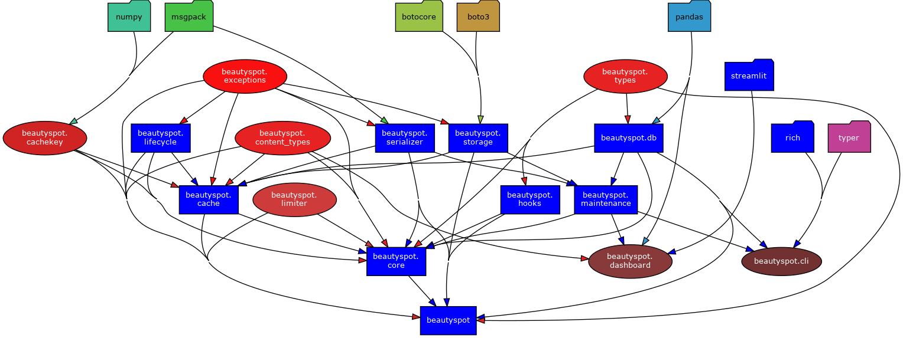
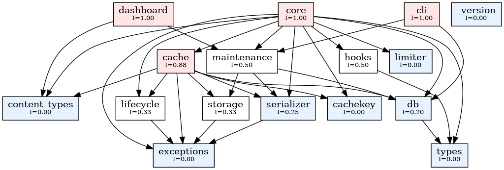
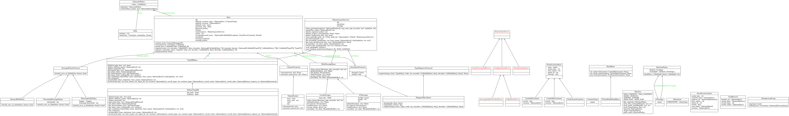

📊 Beautyspot Quality Report
最終更新: 2026-03-06 13:49:11
1. アーキテクチャ可視化
1.1 依存関係図 (Pydeps)

1.2 安定度分析 (Instability Analysis)
青: 安定(Core系) / 赤: 不安定(高依存系)。矢印は依存の方向を示します。

1.3 クラス図 (Class Diagram)

🔍 安定度メトリクスの詳細（Ca/Ce/I）を表示
Module | Ca | Ce | I (Instability)
---------------------------------------------
exceptions | 5 | 0 | 0.00
_version | 0 | 0 | 0.00
content_types | 3 | 0 | 0.00
cli | 0 | 2 | 1.00
types | 3 | 0 | 0.00
cachekey | 2 | 0 | 0.00
hooks | 1 | 1 | 0.50
limiter | 1 | 0 | 0.00
dashboard | 0 | 2 | 1.00
serializer | 3 | 1 | 0.25
lifecycle | 2 | 1 | 0.33
core | 0 | 11 | 1.00
db | 4 | 1 | 0.20
cache | 1 | 7 | 0.88
storage | 2 | 1 | 0.33
maintenance | 3 | 3 | 0.50
Graph generated at: docs/statics/img/generated/architecture_metrics.png
2. コード品質メトリクス
2.1 循環的複雑度 (Cyclomatic Complexity)
⚠️ 警告 (Rank C 以上)
複雑すぎてリファクタリングが推奨される箇所です。
src/beautyspot/cli.py
F 581:0 gc_cmd - D
F 326:0 _show_cmd_inner - C
F 149:0 _list_tasks_inner - C
F 419:0 _stats_cmd_inner - C
F 766:0 _prune_cmd_inner - C
src/beautyspot/cachekey.py
F 239:0 _canonicalize_type - C
src/beautyspot/serializer.py
M 144:4 MsgpackSerializer._default_packer - C
src/beautyspot/lifecycle.py
F 49:0 parse_retention - C
src/beautyspot/db.py
M 394:4 SQLiteTaskDB._enqueue_write - C
M 759:4 SQLiteTaskDB.flush - C
src/beautyspot/maintenance.py
M 253:4 MaintenanceService.clean_garbage - C
M 203:4 MaintenanceService.scan_garbage - C
12 blocks (classes, functions, methods) analyzed.
Average complexity: C (13.416666666666666)
📄 すべての CC メトリクス一覧を表示
src/beautyspot/exceptions.py
C 4:0 BeautySpotError - A
C 12:0 CacheCorruptedError - A
C 19:0 SerializationError - A
C 25:0 ConfigurationError - A
C 32:0 ValidationError - A
C 39:0 IncompatibleProviderError - A
src/beautyspot/content_types.py
C 6:0 ContentType - A
src/beautyspot/cli.py
F 581:0 gc_cmd - D
F 326:0 _show_cmd_inner - C
F 149:0 _list_tasks_inner - C
F 419:0 _stats_cmd_inner - C
F 766:0 _prune_cmd_inner - C
F 227:0 ui_cmd - B
F 527:0 _clean_cmd_inner - B
F 84:0 _list_databases - A
F 474:0 clear_cmd - A
F 50:0 _find_available_port - A
F 60:0 _format_size - A
F 33:0 get_service - A
F 297:0 list_cmd - A
F 731:0 prune_cmd - A
F 842:0 version_cmd - A
F 45:0 _is_port_in_use - A
F 68:0 _format_timestamp - A
F 75:0 _get_task_count - A
F 144:0 _list_tasks - A
F 315:0 show_cmd - A
F 409:0 stats_cmd - A
F 501:0 clean_cmd - A
F 861:0 main - A
src/beautyspot/types.py
C 51:0 HookContextBase - A
M 65:4 HookContextBase.__post_init__ - A
C 10:0 TaskRecord - A
C 22:0 SaveErrorContext - A
C 73:0 PreExecuteContext - A
C 80:0 CacheHitContext - A
C 88:0 CacheMissContext - A
src/beautyspot/cachekey.py
F 239:0 _canonicalize_type - C
F 42:0 _canonicalize_instance - B
F 95:0 canonicalize - B
M 385:4 KeyGen.from_file_content - A
M 403:4 KeyGen._default - A
F 84:0 _is_ndarray_like - A
F 133:0 _canonicalize_dict - A
C 364:0 KeyGen - A
M 435:4 KeyGen.hash_items - A
F 21:0 _safe_sort_key - A
F 142:0 _canonicalize_list - A
F 153:0 _canonicalize_tuple - A
F 163:0 _canonicalize_set - A
F 178:0 _canonicalize_frozenset - A
F 192:0 _canonicalize_deque - A
F 213:0 _canonicalize_ordereddict - A
C 307:0 KeyGenPolicy - A
M 376:4 KeyGen.from_path_stat - A
M 452:4 KeyGen.ignore - A
M 467:4 KeyGen.file_content - A
M 475:4 KeyGen.path_stat - A
F 37:0 _canonicalize_ndarray - A
F 202:0 _canonicalize_defaultdict - A
F 228:0 _canonicalize_enum - A
F 282:4 _canonicalize_np_ndarray - A
C 294:0 Strategy - A
M 313:4 KeyGenPolicy.__init__ - A
M 321:4 KeyGenPolicy.bind - A
M 460:4 KeyGen.map - A
src/beautyspot/hooks.py
C 51:0 ThreadSafeHookBase - A
M 80:4 ThreadSafeHookBase.__init_subclass__ - A
C 12:0 HookBase - A
M 93:4 ThreadSafeHookBase.__getattr__ - A
F 40:0 _wrap_with_lock - A
M 23:4 HookBase.pre_execute - A
M 26:4 HookBase.on_cache_hit - A
M 29:4 HookBase.on_cache_miss - A
M 86:4 ThreadSafeHookBase.__init__ - A
src/beautyspot/limiter.py
M 44:4 TokenBucket._consume_reservation - A
C 16:0 TokenBucket - A
C 10:0 LimiterProtocol - A
M 28:4 TokenBucket.__init__ - A
M 74:4 TokenBucket.consume - A
M 92:4 TokenBucket.consume_async - A
M 11:4 LimiterProtocol.consume - A
M 13:4 LimiterProtocol.consume_async - A
src/beautyspot/dashboard.py
F 44:0 load_data - A
F 15:0 get_args - A
src/beautyspot/serializer.py
M 144:4 MsgpackSerializer._default_packer - C
C 38:0 MsgpackSerializer - A
M 100:4 MsgpackSerializer.register - A
M 203:4 MsgpackSerializer._ext_hook - A
M 226:4 MsgpackSerializer.dumps - A
M 78:4 MsgpackSerializer._get_local_cache - A
M 237:4 MsgpackSerializer.loads - A
C 22:0 SerializerProtocol - A
C 28:0 TypeRegistryProtocol - A
M 95:4 MsgpackSerializer._enforce_cache_size - A
M 23:4 SerializerProtocol.dumps - A
M 24:4 SerializerProtocol.loads - A
M 29:4 TypeRegistryProtocol.register - A
M 61:4 MsgpackSerializer.__init__ - A
src/beautyspot/lifecycle.py
F 49:0 parse_retention - C
M 147:4 LifecyclePolicy.resolve_with_fallback - A
C 15:0 _ForeverSentinel - A
M 26:4 _ForeverSentinel.__new__ - A
C 128:0 LifecyclePolicy - A
M 136:4 LifecyclePolicy.resolve - A
M 35:4 _ForeverSentinel.__repr__ - A
M 38:4 _ForeverSentinel.__bool__ - A
C 102:0 Retention - A
C 119:0 Rule - A
M 133:4 LifecyclePolicy.__init__ - A
M 165:4 LifecyclePolicy.default - A
src/beautyspot/core.py
M 300:4 Spot._ensure_bg_resources - B
M 686:4 Spot._execute_sync - B
M 801:4 Spot._execute_async - B
M 129:4 _BackgroundLoop.submit - B
M 358:4 Spot.flush - B
M 390:4 Spot._trigger_auto_eviction - B
M 662:4 Spot._persist_result_async - B
M 339:4 Spot.shutdown - B
M 441:4 Spot._resolve_key_fn - B
M 646:4 Spot._persist_result_sync - B
M 160:4 _BackgroundLoop.stop - A
M 975:4 Spot._save_result_async - A
C 79:0 _BackgroundLoop - A
C 197:0 Spot - A
M 214:4 Spot.__init__ - A
M 286:4 Spot.maintenance - A
M 523:4 Spot._dispatch_hooks - A
M 930:4 Spot._handle_save_error - A
M 1113:4 Spot.cached_run - A
M 118:4 _BackgroundLoop._task_wrapper - A
M 328:4 Spot._shutdown_resources - A
M 385:4 Spot._get_func_identifier - A
M 456:4 Spot.register - A
M 273:4 Spot._track_future - A
M 497:4 Spot.register_type - A
M 537:4 Spot._dispatch_hooks_async - A
M 553:4 Spot._resolve_settings - A
M 567:4 Spot._prepare_execution - A
M 966:4 Spot._submit_background_save - A
M 990:4 Spot._save_result_safe - A
M 1042:4 Spot.mark - A
C 66:0 _ExecutionContext - A
M 88:4 _BackgroundLoop.__init__ - A
M 110:4 _BackgroundLoop._run_event_loop - A
M 189:4 _BackgroundLoop._shutdown - A
M 267:4 Spot.__enter__ - A
M 270:4 Spot.__exit__ - A
M 382:4 Spot._drain_futures - A
M 597:4 Spot._build_cache_hit_context - A
M 617:4 Spot._build_save_kwargs - A
M 960:4 Spot._notify_save_discarded - A
M 996:4 Spot.consume - A
M 1025:4 Spot.mark - A
M 1028:4 Spot.mark - A
M 1107:4 Spot.cached_run - A
M 1110:4 Spot.cached_run - A
src/beautyspot/db.py
M 394:4 SQLiteTaskDB._enqueue_write - C
M 759:4 SQLiteTaskDB.flush - C
M 297:4 SQLiteTaskDB._read_connect - B
M 356:4 SQLiteTaskDB._writer_loop - B
M 438:4 SQLiteTaskDB.shutdown - B
M 538:4 SQLiteTaskDB.get - B
M 100:4 _ReadConnWrapper.close - A
C 254:0 SQLiteTaskDB - A
M 675:4 SQLiteTaskDB.get_outdated_tasks - A
M 712:4 SQLiteTaskDB.get_blob_refs - A
F 135:0 _ensure_utc_isoformat - A
C 93:0 _ReadConnWrapper - A
C 147:0 _WriteTask - A
M 259:4 SQLiteTaskDB.__init__ - A
M 284:4 SQLiteTaskDB._ensure_cache_dir - A
M 618:4 SQLiteTaskDB.get_history - A
M 723:4 SQLiteTaskDB.get_keys_start_with - A
M 739:4 SQLiteTaskDB.count_tasks - A
C 22:0 TaskDBCore - A
C 51:0 Flushable - A
C 58:0 Shutdownable - A
C 65:0 Maintenable - A
M 155:4 _WriteTask.try_cancel - A
M 163:4 _WriteTask.try_start - A
M 171:4 _WriteTask.mark_done - A
C 181:0 TaskDBBase - A
M 244:4 TaskDBBase.get_history - A
M 696:4 SQLiteTaskDB.delete_expired - A
M 27:4 TaskDBCore.init_schema - A
M 29:4 TaskDBCore.get - A
M 33:4 TaskDBCore.save - A
M 47:4 TaskDBCore.delete - A
M 54:4 Flushable.flush - A
M 61:4 Shutdownable.shutdown - A
M 70:4 Maintenable.delete_expired - A
M 72:4 Maintenable.prune - A
M 74:4 Maintenable.get_outdated_tasks - A
M 78:4 Maintenable.get_blob_refs - A
M 80:4 Maintenable.delete_all - A
M 82:4 Maintenable.get_keys_start_with - A
M 84:4 Maintenable.get_history - A
C 88:0 TaskDBMaintenable - A
M 94:4 _ReadConnWrapper.__init__ - A
M 124:4 _ReadConnWrapper.__del__ - A
M 188:4 TaskDBBase.init_schema - A
M 192:4 TaskDBBase.get - A
M 198:4 TaskDBBase.save - A
M 214:4 TaskDBBase.delete - A
M 218:4 TaskDBBase.delete_expired - A
M 222:4 TaskDBBase.prune - A
M 226:4 TaskDBBase.get_outdated_tasks - A
M 232:4 TaskDBBase.get_blob_refs - A
M 236:4 TaskDBBase.delete_all - A
M 240:4 TaskDBBase.get_keys_start_with - A
M 466:4 SQLiteTaskDB.init_schema - A
M 575:4 SQLiteTaskDB.save - A
M 637:4 SQLiteTaskDB.delete - A
M 644:4 SQLiteTaskDB.delete_all - A
M 657:4 SQLiteTaskDB.prune - A
src/beautyspot/cache.py
M 126:4 CacheManager.get - B
M 228:4 CacheManager.wait_herd_sync - B
M 297:4 CacheManager._await_herd_signal_async - B
M 327:4 CacheManager.notify_and_cleanup_inflight - B
C 42:0 CacheManager - B
M 170:4 CacheManager.set - B
M 261:4 CacheManager.wait_herd_async - B
M 99:4 CacheManager.calculate_expires_at - A
M 77:4 CacheManager.make_cache_key - A
M 52:4 CacheManager.__init__ - A
C 32:0 HerdWaitResult - A
M 349:4 CacheManager._notify_future - A
src/beautyspot/storage.py
M 328:4 LocalStorage.prune_empty_dirs - B
M 304:4 LocalStorage.clean_temp_files - B
C 159:0 LocalStorage - A
M 376:4 S3Storage.__init__ - A
M 393:4 S3Storage._parse_s3_uri - A
M 179:4 LocalStorage._validate_key - A
M 236:4 LocalStorage.load - A
M 257:4 LocalStorage.delete - A
M 281:4 LocalStorage.list_keys - A
C 375:0 S3Storage - A
C 50:0 WarningOnlyPolicy - A
M 166:4 LocalStorage._ensure_cache_dir - A
M 194:4 LocalStorage.save - A
M 295:4 LocalStorage.get_mtime - A
M 449:4 S3Storage.list_keys - A
F 457:0 create_storage - A
C 27:0 StoragePolicyProtocol - A
C 37:0 ThresholdStoragePolicy - A
M 65:4 WarningOnlyPolicy.should_save_as_blob - A
C 75:0 AlwaysBlobPolicy - A
C 88:0 BlobStorageCore - A
C 98:0 Maintenable - A
C 112:0 BlobStorageBase - A
M 413:4 S3Storage.load - A
M 425:4 S3Storage.delete - A
M 438:4 S3Storage.get_mtime - A
M 33:4 StoragePolicyProtocol.should_save_as_blob - A
M 45:4 ThresholdStoragePolicy.should_save_as_blob - A
M 81:4 AlwaysBlobPolicy.should_save_as_blob - A
M 93:4 BlobStorageCore.save - A
M 94:4 BlobStorageCore.load - A
M 95:4 BlobStorageCore.delete - A
M 103:4 Maintenable.list_keys - A
M 104:4 Maintenable.get_mtime - A
C 108:0 BlobStorageMaintenable - A
M 119:4 BlobStorageBase.save - A
M 127:4 BlobStorageBase.load - A
M 134:4 BlobStorageBase.delete - A
M 142:4 BlobStorageBase.list_keys - A
M 151:4 BlobStorageBase.get_mtime - A
M 160:4 LocalStorage.__init__ - A
M 405:4 S3Storage.save - A
src/beautyspot/maintenance.py
M 253:4 MaintenanceService.clean_garbage - C
M 203:4 MaintenanceService.scan_garbage - C
M 106:4 MaintenanceService.get_task_detail - B
M 150:4 MaintenanceService.delete_task - B
C 19:0 MaintenanceService - A
M 52:4 MaintenanceService.from_path - A
M 363:4 MaintenanceService.scan_orphan_projects - A
M 335:4 MaintenanceService.resolve_key_prefix - A
M 383:4 MaintenanceService.delete_project_storage - A
M 36:4 MaintenanceService.close - A
M 24:4 MaintenanceService.__init__ - A
M 45:4 MaintenanceService.__enter__ - A
M 48:4 MaintenanceService.__exit__ - A
M 102:4 MaintenanceService.get_history - A
M 145:4 MaintenanceService.delete_expired_tasks - A
M 184:4 MaintenanceService.get_prunable_tasks - A
M 190:4 MaintenanceService.prune - A
M 197:4 MaintenanceService.clear - A
src/beautyspot/__init__.py
F 49:0 Spot - B
289 blocks (classes, functions, methods) analyzed.
Average complexity: A (3.0588235294117645)
2.2 保守性指数 (Maintainability Index)
⚠️ 警告 (Rank B 以下)
コードの読みやすさ・保守しやすさに改善の余地があるモジュールです。
📄 すべての MI メトリクス一覧を表示
src/beautyspot/exceptions.py - A
src/beautyspot/_version.py - A
src/beautyspot/content_types.py - A
src/beautyspot/cli.py - A
src/beautyspot/types.py - A
src/beautyspot/cachekey.py - A
src/beautyspot/hooks.py - A
src/beautyspot/limiter.py - A
src/beautyspot/dashboard.py - A
src/beautyspot/serializer.py - A
src/beautyspot/lifecycle.py - A
src/beautyspot/core.py - A
src/beautyspot/db.py - A
src/beautyspot/cache.py - A
src/beautyspot/storage.py - A
src/beautyspot/maintenance.py - A
src/beautyspot/__init__.py - A
4. デザイン・インテント分析 (Design Intent Map)
クラス図には現れない、生成関係、静的利用、および Protocol への暗黙的な準拠を可視化します。
graph LR
classDef protocol fill:#f9f,stroke:#333,stroke-width:2px;
class LimiterProtocol protocol;
class SerializerProtocol protocol;
class TypeRegistryProtocol protocol;
class TaskDBCore protocol;
class Flushable protocol;
class Shutdownable protocol;
class Maintenable protocol;
class TaskDBMaintenable protocol;
class StoragePolicyProtocol protocol;
class BlobStorageCore protocol;
class BlobStorageMaintenable protocol;
AlwaysBlobPolicy -. "implements" .-> StoragePolicyProtocol
BlobStorageBase -. "implements" .-> BlobStorageCore
BlobStorageBase -. "implements" .-> Maintenable
CacheManager -- "creates" --> HerdWaitResult
CacheManager -. "uses" .-> KeyGen._default
CacheManager -. "uses" .-> LifecyclePolicy.default
CacheManager -- "creates" --> RuntimeError
CacheManager -- "creates" --> TimeoutError
HookContextBase -- "creates" --> MappingProxyType
KeyGen -- "creates" --> KeyGenPolicy
KeyGen -- "creates" --> ValueError
KeyGenPolicy -. "uses" .-> KeyGen.from_file_content
KeyGenPolicy -. "uses" .-> KeyGen.from_path_stat
KeyGenPolicy -. "uses" .-> KeyGen.hash_items
LocalStorage -. "implements" .-> BlobStorageCore
LocalStorage -- "creates" --> CacheCorruptedError
LocalStorage -. "implements" .-> Maintenable
LocalStorage -- "creates" --> Path
LocalStorage -- "creates" --> ValidationError
LocalStorage -- "creates" --> ValueError
MaintenanceService -- "creates" --> MsgpackSerializer
MaintenanceService -- "creates" --> Path
MaintenanceService -- "creates" --> SQLiteTaskDB
MsgpackSerializer -- "creates" --> OrderedDict
MsgpackSerializer -- "creates" --> SerializationError
MsgpackSerializer -. "implements" .-> SerializerProtocol
MsgpackSerializer -. "implements" .-> TypeRegistryProtocol
MsgpackSerializer -- "creates" --> ValueError
S3Storage -. "implements" .-> BlobStorageCore
S3Storage -- "creates" --> CacheCorruptedError
S3Storage -- "creates" --> ImportError
S3Storage -. "implements" .-> Maintenable
S3Storage -- "creates" --> ValidationError
SQLiteTaskDB -. "implements" .-> Flushable
SQLiteTaskDB -- "creates" --> ImportError
SQLiteTaskDB -- "creates" --> Path
SQLiteTaskDB -- "creates" --> RuntimeError
SQLiteTaskDB -. "implements" .-> Shutdownable
SQLiteTaskDB -. "implements" .-> TaskDBCore
SQLiteTaskDB -- "creates" --> TaskRecord
SQLiteTaskDB -- "creates" --> TimeoutError
Spot -- "creates" --> CacheHitContext
Spot -- "creates" --> CacheMissContext
Spot -- "creates" --> ConfigurationError
Spot -. "implements" .-> Flushable
Spot -- "creates" --> IncompatibleProviderError
Spot -. "implements" .-> LimiterProtocol
Spot -- "creates" --> MaintenanceService
Spot -- "creates" --> NotImplementedError
Spot -- "creates" --> PreExecuteContext
Spot -- "creates" --> RuntimeError
Spot -- "creates" --> SaveErrorContext
Spot -. "implements" .-> Shutdownable
Spot -- "creates" --> ThreadPoolExecutor
Spot -. "implements" .-> TypeRegistryProtocol
Spot -- "creates" --> ValidationError
Spot -- "creates" --> ValueError
TaskDBBase -- "creates" --> ImportError
TaskDBBase -. "implements" .-> TaskDBCore
ThreadSafeHookBase -- "creates" --> AttributeError
ThresholdStoragePolicy -. "implements" .-> StoragePolicyProtocol
TokenBucket -. "implements" .-> LimiterProtocol
TokenBucket -- "creates" --> ValueError
WarningOnlyPolicy -. "implements" .-> StoragePolicyProtocol